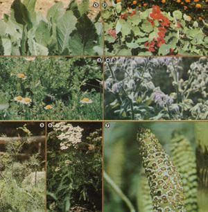

In Mother No. 62, we told you how to rid your garden of many desctruction insects without resorting to dengerous chemicals. Now here's...
By midsummer, most gardeners expect their months of mulch ing, tilling, composting, seeding, and weeding to begin to pay off at last. Hungry horticulturists, however, aren't the only creatures who've been keeping a watch on the maturing produce, because July and August are also-in most parts of North America-the peak of the "pest season" . . . a time when beetles riddle cuke plants, hornworms strip toma toes, and raccoons demolish corn.
But even if your crops are under siege by a veritable army of produce plunderers, there's no reason to lay on a heavy chemical hand. Numerous hazard-free, homegrown pest repellents can help gardeners bring in big, healthful harvests to feed their families. Of course, some remedies are best employed at the beginning of the growing season (an ounce of prevention, you know). And now-while the results of not having taken protective measures at planting time are all too obvious-is a good time to plan next season's campaign. However, I'm also going to provide you with a few ideas on how to discourage the bandits that may be chomping on your crops at this very moment!
PROTECT SQUASH, CORN, AND TOMATOES
You can, for example, guard your maturing cucumbers and squash by using a handy kitchen discard ... onion skins! Simply strew a big handful of these leftovers loosely across the top of each hill, and let the legendary Allium pungency drive away the most stubborn of cucumber beetles (as the skins decay, they'll add valuable organic matter to your soil).
For even more protection, you might border next year's hilled areas with orange nasturtiums (Tropaeolum majus), then further guard the mature plants by spraying a mix of equal parts of wood ashes and hydrated lime in water on the upper and lower surfaces of the spreading foliage.
Early in the year, you can fortify your future tomato territory by sowing dill (Anethum graveolens) and borage (Borago officinalis) to repel hornworms. Needless to say, you'll enjoy these two useful and flavorful herbs for themselves, as well as for their ability to protect your tomato crop.
One of the high points of summer-at least around my house-is the first menu that includes field-fresh roasting ears dripping with butter ... and one of the low points is finding out that raccoons, squirrels, or earworms got to that dinner before we did! To prevent such a catastrophe, consider trying a few of the following plans of attack.
If your acreage allows, you might want to surround 1982's crop of golden-eared goodies with a "soybean trap", which will tempt any furry four-footed invaders to fill their bellies with beans before they reach the succulent maize. (For maximum efficiency, choose a soybean variety that will mature when your corn does.) In addition, you'll find that nasturtiums (which also repel aphids and Mexican bean beetles), marigolds, and mustard rebuff numerous gnawing pests by their color and pungent aroma. This year, you can keep most of the competition away from your roasting ears if you just walk through the patch, putting a pinch of cayenne pepper on the silks.
Some folks also place crumpled newspapers between the rows . . . scatter sections of garden hose cut in one- to threefoot lengths (to resemble snakes) . . . hang pieces of a broken mirror about . . . string Christmas tree lights through the rows (who cares what the neighbors think!) . . . and even play tape recordings of shotgun blasts to discourage would-be produce pirates!
MIGHTY MARIGOLDS AND MOLE DESTROYERS
While both French and African marigolds (Tagetes erecta) help rid soil of nematodes, the Mexican variety (Tagetes minuta) apparently exudes a substance from its roots that's actually toxic to certain invasive weeds! Try sowing the potent flowers as a cover crop this autumn. Then, when next year's planting time rolls around, the posies can be turned under for one of the finest, most soil-cleansing green manure crops your ground could hope for. Tagetes minuta is also repellent to rabbits, and destroys innumerable soilborn pests. So be extravagant with the flowers. Scatter them throughout your orchard . . . surround your roses with them ... and use some of the foliage to brew up a "tea" to spray localized pest-infested areas.
If your midsummer plot is under attack by any below-ground burrowers, you might want to plan to have a few mole plants (Euphorbia lathyris) growing around the edges of your garden next time around. The exotic-looking biennials with their milky, latexlike sap (it's now being considered as a potential source of petroleum substitutes) have long been known as gopher deterrents . . . and they'll sow themselves the second year, providing you with seedlings to place in other moleridden spots.
Two other plants that can be sown to help eliminate moles are the castor bean (Ricinus communis .. . which also fends off flies and mosquitoes) and the common dandelion (Taraxacum officinale). Castor bean seeds, however, are poisonous, so be sure to caution neighborhood youngsters if you grow this plant.
SLUGS, BEETLES, AND MOTHS
Slugs, which are among the most damaging above-ground pests, can be discouraged with a preparation made from silicon-rich horsetails (Equisetum arvense). Once dried, the plants produce a powder that's highly repellent to the slimy slitherers. (You can also place discarded cabbage leaves and grapefruit rinds-or even old boards-throughout the garden in the evening. When day breaks, check underneath the upsidedown "slug domes" . . . remove the occupants . . . and either add them to your ducks' breakfast menu or squash them.)
And, if Japanese beetles appear to be your primary enemy, plan to plant castor beans, white-flowering geraniums, zinnias, and garlic throughout your garden area next year.
For more general purpose garden guarding, consider the roadside herb, yarrow (Achillea millefolium). It not only repels a number of pests, but is commonly be lieved to enhance the growth and flavor of plants growing nearby. Furthermore, Achillea's friendly qualities can be utilized throughout the year if you simply brew the foliage into a liquid fertilizer and water periodically with the "tea".
When your cole family vegetables face an invasion of cabbage moths and their larvae (which can mutilate plants in a few short days), rely upon an item from your kitchen: Simply pour soured milk over the young cabbages, etc. to keep the moths aloft and the worms away.
INDOOR PESTICIDES
Your special, tender greenhouse tenants need protection, too, so always allow a few shoo-fly plants (Nicandra physalodes) to occupy several places of honor in your solarium. The attractive, fast-growing annuals are toxic to all pests that chew them, and rebuff the white flies that often plague enclosed gardens.
Homegrown pesticides can also keep your kitchen and food storage areas free of unwanted guests. For example, a couple of bay leaves (Laurus nobilis) in the bottom of grain containers will keep them bug-free, and tiny cloth bags of ground black pepper will prevent weevils from infesting dried beans. Furthermore, if silverfish are setting up housekeeping in your cupboards, just place fragrant leaves of costmary (Chrysanthemum balsamita) in each section of the cabinets to make the squatters move on.
MODERATION IN ALL THINGS . . .
Resourceful gardeners have found innumerable common plants that have pestchasing abilities. Sprays, for instance, can be made from many different species and used for a variety of purposes: The alkaloid exudates from nearly every type of tomato foliage will deter aphids . . . stinging nettle (Urtica dioica) spray encourages healthier plants . . . a turnip or anise mist will rid your crops of spider mites and aphids ... basil spray discourages flies (and mass plantings of the herb around a porch or patio will also repel the insects) ... and onion, garlic, horseradish, mint, and chamomileflower sprays all have bugchasing qualities of their own!
Even as you put such organic pesticides to use, though, keep in mind that an insect or two here and there will not pose a threat to your growing grounds. In small numbers the invaders simply provide food for their natural predators, such as swal lows ... each of whom may consume 2,000 insects a day! In fact, Mother Nature maintained a precious and delicate balance long before we decided to intervene. It's the duty of every concerned gardener to respect that balance, and to use repellentseven natural ones-only when populations of pests threaten to become excessive.
EDITOR'S NOTE: Author Diane Downs sells most of the plants listed in this article, plus some 150 varieties of live herb,. plants, herb seeds, and herbal products. For a listing, send $1.00 and a selfad-a dressed, stamped envelope to Lost Prairie; Herb Farm, Dept. TMEN, Star Route, Marion, Montana 59925. And for information on ordering MOTHER NO. 62, which contains more homegrown pest control tips,: turn to page 112.
|
 [1] Costmary leaves will help keep your cupboards free of silverfish. [2] Orange nasturtiums repel cucumber beetles, aphids, and Mexican bean beetles. [3] Chamomile flowers will ,!;race your yard and drive away pests. [4] Savory borage can be sown with tomatoes to deter hornworms. [5] Will will also help protect a tomato crop from horn worms. [6] A liquid fertilizer ""tea"" made from yarrow, a roadside herb, trill benefit all plants. [7] Dried and crushed horsetails can be used as a high-potency powder repellent for slugs |
|
|